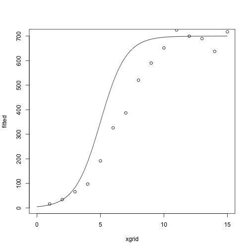
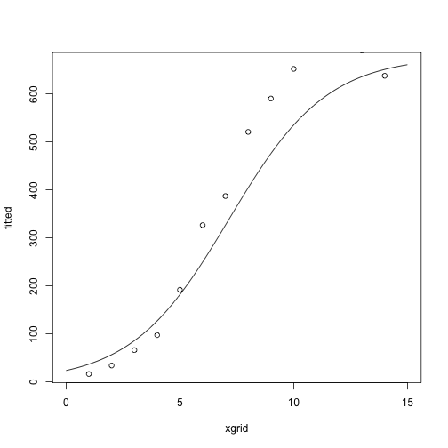
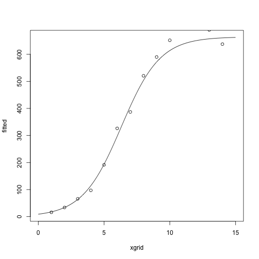
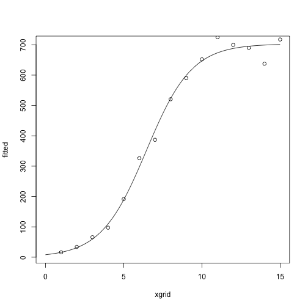

More optimization…
So far
Today: modifications of Newton’s method
Fisher scoring (if you want to make sure the Hessian term is negative definite)
Hessian approximations (if it takes too long to re-compute/re-invert the Hessian)
Gradient descent (if you don’t want to ever compute or invert the Hessian)
Reading:
Boyd and Vandenberghe, Chapter 9.1-9.4
Kenneth Lange, Numerical Analysis for Statisticians, Sections 13.3-13.6
Fisher Scoring
Idea: Use the expected information, \(I(\theta)= E[-d^2 \ell(\theta)]\) instead of the observed information, \(d^2 \ell(\theta)\).
Algorithm:
\(I(\theta)\) often coincides with \(-d^2 \ell(\theta)\), in which case Fisher Scoring is exactly the same as Newton’s method.
Sometimes \(I(\theta)\) is easier to compute than \(-d^2 \ell(\theta)\).
Example: Non-linear least squares
Inputs:
Data \(y_1,\ldots, y_n\).
Covariates \(x_1,\ldots, x_n\).
Parameter vector \(\theta\)
Non-linear function \(\mu\), with \(\mu(x, \theta_1, \theta_2, \theta_3) = \frac{\theta_3}{1 + e^{-\theta_1 + \theta_2 x}}\)
For notational purposes, let \(\mu_i (\theta) = \mu(x_i, \theta_1,\theta_2,\theta_3)\).
Model: \[
y_i \sim N(\mu_i(\theta), \sigma^2)
\]
Log likelihood: \[
\ell(\theta) = - \frac{1}{2} \sum_{i=1}^n (y_i - \mu_i(\theta))^2 + C
\]
Gradient/score: \[
\begin{align*}
d\ell(\theta) &= \sum_{i=1}^n (y_i - \mu_i(\theta)) d\mu_i(\theta)\\
d\mu_i(\theta) &= \begin{pmatrix}
\frac{\theta_3 e^{-\theta_1 - \theta_2 x}}{(1 + e^{-\theta_1 - \theta_2 x})^2} \\
\frac{x\theta_3 e^{-\theta_1 - \theta_2 x}}{(1 + e^{-\theta_1 - \theta_2 x})^2} \\
\frac{1}{(1 + e^{-\theta_1 - \theta_2 x})^2}
\end{pmatrix}
\end{align*}
\]
Hessian: \[
d^2 \ell(\theta) = -\sum_{i=1}^n d \mu_i(\theta) d \mu_i(\theta)^T + \sum_{i=1}^n (y_i - \mu_i(\theta))d^2 \mu_i(\theta)
\]
Information: \[
I(\theta) = E[-d^2 \ell(\theta)] = \sum_{i=1}^n d\mu_i(\theta) d\mu_i(\theta)^T
\]
Example
fisher_scoring_iterate = function(x, y, theta_current) {
score = compute_score(x, y, theta_current)
information = compute_information(x, theta_current)
theta_new = theta_current + solve(information) %*% score
}
compute_score = function(x, y, theta) {
fitted = nonlin_function(x, theta)
grad_mu = compute_grad_mu(x, theta)
rowSums(sweep(grad_mu, 2, STATS = y - fitted, FUN = "*"))
}
compute_information = function(x, theta) {
## a 3 x n matrix
grad_mu = compute_grad_mu(x, theta)
grad_mu %*% t(grad_mu)
}
compute_grad_mu = function(x, theta) {
denom = 1 + exp(-theta[1] - theta[2] * x)
g1 = theta[3] * exp(-theta[1] - theta[2] * x) / denom^2
g2 = x * theta[3] * exp(-theta[1] - theta[2] * x) / denom^2
g3 = 1 / denom
return(rbind(g1, g2, g3))
}
nonlin_function = function(x, theta) {
theta[3] / (1 + exp(-theta[1] - theta[2] * x))
}
At the starting values:
library(NISTnls)
data(Ratkowsky3)
x = Ratkowsky3$x
y = Ratkowsky3$y
theta = c(-5, 1, 700)
xgrid = seq(0, 15, length.out = 1000)
fitted = nonlin_function(xgrid, theta)
plot(fitted ~ xgrid, type = 'l')
points(y ~ x)

After one iteration:
(theta = fisher_scoring_iterate(x, y, theta))
## [,1]
## g1 -3.3298463
## g2 0.4649027
## g3 677.8340519
fitted = nonlin_function(xgrid, theta)
plot(fitted ~ xgrid, type = 'l')
points(y ~ x)

After two iterations:
(theta = fisher_scoring_iterate(x, y, theta))
## [,1]
## g1 -4.2780124
## g2 0.6775608
## g3 664.2494602
fitted = nonlin_function(xgrid, theta)
plot(fitted ~ xgrid, type = 'l')
points(y ~ x)

After several more iterations
for(i in 1:5) {
theta = fisher_scoring_iterate(x, y, theta)
print(theta)
}
## [,1]
## g1 -4.438590
## g2 0.687286
## g3 702.939738
## [,1]
## g1 -4.4435690
## g2 0.6887401
## g3 702.8457366
## [,1]
## g1 -4.4424684
## g2 0.6885486
## g3 702.8741477
## [,1]
## g1 -4.4425736
## g2 0.6885677
## g3 702.8711538
## [,1]
## g1 -4.4425628
## g2 0.6885657
## g3 702.8714589
fitted = nonlin_function(xgrid, theta)
plot(fitted ~ xgrid, type = 'l')
points(y ~ x)

Compare with
nls(y ~ b3 / ((1+exp(-b1-b2*x))), data = Ratkowsky3,
start = c(b1 = -5, b2 = 0.75, b3 = 700),
trace = TRUE)
## 12935.59 : -5.00 0.75 700.00
## 8971.367 : -4.3638666 0.6765795 703.9695386
## 8930.131 : -4.4470558 0.6894499 702.6779778
## 8929.885 : -4.4420175 0.6884684 702.8858827
## 8929.883 : -4.4426184 0.6885758 702.8698817
## 8929.883 : -4.4425582 0.6885649 702.8715881
## Nonlinear regression model
## model: y ~ b3/((1 + exp(-b1 - b2 * x)))
## data: Ratkowsky3
## b1 b2 b3
## -4.4426 0.6886 702.8716
## residual sum-of-squares: 8930
##
## Number of iterations to convergence: 5
## Achieved convergence tolerance: 5.737e-06
Quasi-Newton Methods
Idea: If you don’t move very far in one step, the Hessian shouldn’t change that much either.
Instead of recomputing the Hessian at each step, compute an approximate update.
Start with an initial guess at a parameter \(\theta^{(0)}\).
Let \(A^{(0)} = d^2 \ell(\theta)\).
Set \(\theta^{(n+1)} = \theta^{(n)} - (A^{(n)})^{-1} d \ell(\theta^{(n)})\)
Set \(A^{(n+1)} = A^{(n)} - c^{(n)} v^{(n)} (v^{(n)})^T\)
\(A^{(n)}\) are approximations to the Hessian.
Idea behind Hessian update: Taylor series again:
\[
d\ell(\theta^{(n)}) \approx d\ell(\theta^{(n+1)}) + d^2 \ell(\theta^{(n+1)})(\theta^{(n)} - \theta^{(n+1)})
\]
Rearranging: \[
d\ell(\theta^{(n)}) - d\ell(\theta^{(n+1)})\approx d^2 \ell(\theta^{(n+1)})(\theta^{(n)} - \theta^{(n+1)})
\]
Finding an approximation \(A^{(n+1)}\) of \(-d^2\ell(\theta^{(n+1)})\) that satisfies the equation above is called the secant condition.
Several different ways to make the approximation:
Symmetric rank-1 update is Davidson’s method, described in Lange.
Symmetric rank-2 update is BFGS (Broyden–Fletcher–Goldfarb–Shanno).
For notation, let \[
\begin{align*}
g^{(n)} &= d\ell(\theta^{(n)}) - d \ell(\theta^{(n+1)}) \\
s^{(n)} &= \theta^{(n)} - \theta^{(n+1)}
\end{align*}
\]
We can rewrite the secant condition \[
d\ell(\theta^{(n)}) - d\ell(\theta^{(n+1)})\approx d^2 \ell(\theta^{(n+1)})(\theta^{(n)} - \theta^{(n+1)})
\] as \[
-A^{(n+1)} s^{(n)} = g^{(n)}
\]
Davidson’s method is a symmetric rank-1 update.
\[
A^{(n+1)} = A^{(n)} - c^{(n)} v^{(n)} (v^{(n)})^T
\]
where \[
c^{(n)} = \frac{1}{(g^{(n)} + A^{(n)} s^{(n)})^T s^{(n)}} \\
v^{(n)} = g^{(n)} + A^{(n)} s^{(n)}
\]
(verify on your own that this satisfies the secant condition)
BFGS is a symmetric rank-2 update.
\[
A^{(n+1)} = A^{(n)} + \alpha u u^T + \beta v v^T
\]
\(u = y^{(k)}\), \(v = A^{(n)} s^{(n)}\), \(\alpha = -1 / (g^{(k)})^T s^{(k)}\), \(\beta = - 1 / (s^{(k)})^T B^{(k)} s^{(k)}\)
Why are these useful?
This makes it easy to compute an approximation of \(-d^2 \ell(\theta)\), but we still need to invert it to take an approximate Newton step
Woodbury matrix identity allows us to compute the inverse of a low-rank update quickly
\[
(A + UCV)^{-1}= A^{-1} - A^{-1} U(C^{-1} + VA^{-1} U)^{-1} V A^{-1}
\]
Gradient descent
Our problem:
\[
\text{minimize}_x \quad f(x)
\]
Note that we’re doing minimization instead of maximization now so that the notation matches the reading, but any minimization problem can be recast as a maximization and vice versa.
Descent Methods
General algorithm:
Start with a point \(x\)
Repeat
Until the stopping criterion is satisfied, usually \(\|\nabla f(x)\|_2 \le \epsilon\).
Line search types: Exact line search
Step size \(t\) found as \[
t = \text{argmin}_{t > 0}f(x + t \Delta x)
\]
This can be useful if there is an analytic or otherwise quick method of finding the minimum of the function restricted to a ray.
Line search types: Backtracking line search
Step size \(t\) found with an iterative method.
Parameters \(\alpha \in (0, 1/2)\), \(\beta \in (0,1)\) that you specify.
Algorithm: Start at \(t = 1\), repeat \(t \leftarrow \beta t\) until \[
f(x + t \Delta x) < f(x) + \alpha t \nabla f(x)^T \Delta x
\]

Gradient descent
In gradient descent, we take \(\Delta x = - \nabla f(x)\).
Overall algorithm:
Start with a point \(x\)
Repeat
\(\Delta x \leftarrow - \nabla f(x)\).
Line search: Choose step size \(t\) by either backtracking line search or exact line search.
Update: \(x \leftarrow x + t \Delta x\)
Until the stopping criterion is satisfied, usually \(\|\nabla f(x)\|_2 \le \epsilon\).
Gradient descent example

Iterates of gradient descent with backtracking line search, for minimizing \(f(x_1, x_2) = \exp(x_1 + 3 x_2 - .1) + \exp(x_1 - 3 x_2 - .1) + \exp(-x_1 - .1)\)
Contours represent the boundaries of the sublevel sets of the function: \(\{x : f(x) \le a\}\).
Steepest descent
Steepest descent: modification of the descent direction.
The normalized steepest descent direction is defined as \[
\Delta x_{nsd} = \text{argmin}_x \{\nabla f(x)^T v : \|v\| = 1\}
\] for some norm \(\|\cdot \|\).
Note: Steepest descent with the standard norm (\(\|\cdot\|_2\)) is the same as gradient descent.
Steepest descent algorithm
The same as gradient descent, but with a different descent direction:
Start with a point \(x\)
Repeat
\(\Delta x \leftarrow \Delta x_{sd}\).
Line search: Choose step size \(t\) by either backtracking line search or exact line search.
Update: \(x \leftarrow x + t \Delta x_{sd}\)
Until the stopping criterion is satisfied, usually \(\|\nabla f(x)\|_2 \le \epsilon\).
Normalized steepest descent direction for a quadratic norm

Ellipse is the set \(\{v: \|v\|_P \le 1\}\)
\(\Delta x_{nsd}\) is the point in the ellipse that extends farthest in the direction of \(-\nabla f(x)\).
Analytic solution for the steepest descent direction: \[
\Delta x_{nsd} = -(\nabla f(x)^T P^{-1} \nabla f(x))^{-1/2} P^{-1}
\nabla f(x)
\]
There is a standard way of normalizing, involving a dual norm (see the text if you’re interested), the unnormalized steepest descent search direction is \[
\Delta x_{sd}= -P^{-1} \nabla f(x)
\]
Examples of the effect of the norm


The choice of norm changes dramatically the number of steps needed to reach the optimum
Steps show steepest descent/backtracking line search for quadratic norms
Ellipses are the norm balls around each of the iterates
When can we expect these methods to do well?
From the pictures, we saw that
For example

Gradient descent on a transformed version of the problem before.
Sublevel sets now much closer to spherical, and the algorithm converges quickly.
Re-interpretation of Newton’s method
Recall the Newton step: \(-\nabla^2 f(x)^{-1} \nabla f(x)\)
This search direction is the same as the steepest descent direction in the Hessian norm: \(\|\cdot\|_{\nabla^2 f(x)}\)
Turns out the Hessian norm gives a good approximation of the contours of the sublevel sets around the optimal point: this is why it has such fast convergence.
Summing up
Everything we’ve seen has an interpretation as Newton’s method with some approximation of the Hessian standing in for the real thing
Everything we’ve seen has an interpretation as gradient descent in a transformed coordinate system
You need to trade off between using the analytic information you have about the problem and computational complexity.